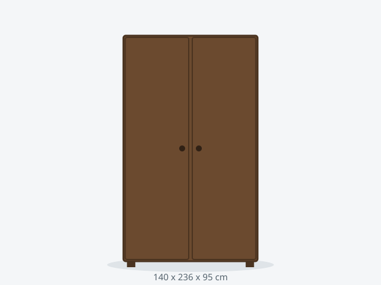

Armario FLEX 140 Esquinero
Solución esquinera de fondo ampliado que aprovecha el rincón sin invadir la habitación.
479 €
Última semana · envío en 4-7 días
DisponibilidadÚltima semana
Dimensiones140 x 236 x 95 cm
ColoresNogal, Arena
Baldas5 baldas
Carga por balda28 kg
Peso total máximo190 kg
MaterialTablero melamínico 16 mm
Puertas2 correderas
Montaje120 min
Habitación mínima170 cm ancho x 125 cm fondo
Anclaje a paredSi
Stock8 unidades
Consejo de compra: mide el rincón antes de comprar, ya que el fondo de 95 cm requiere espacio de apertura lateral.